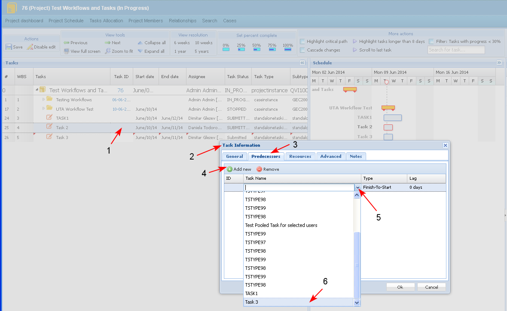
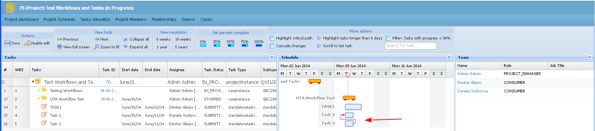
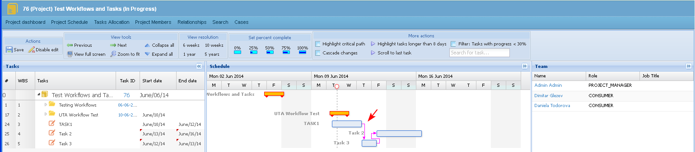

The topic describes the types of links that could be created between tasks.
Preconditions
Links on sub-tasks of a "Workflow" summary task could not be changed.
The following links could be created:
- Finish to Start - the second task starts right after the first is finished - this is a dependency for consecutive tasks.
- Start to Start - both tasks start at the same time - this is a dependency for parallel tasks.
Create a link directly entering predecessor/ successor task in the respective field
- The user edits the task details of a selected task (1). In the Task Information screen (2) the user selects the predecessor task from the drop down list (3-4-5-6).

- The predecessor task is selected (1). The user chooses the type of link (2-3) and clicks "OK" (4).

- The created link appears in the schedule. The user saves the changes.

Create a link from the Gantt Chart view
- The user clicks on a selected task (start or end) and drags a link from it to the beginning/ end of a successor/ predecessor task (1-2).
- A tool tip shows whether the creation of a link between the two tasks is permitted or not (3).

- The created link appears in the schedule. The user saves the changes.
